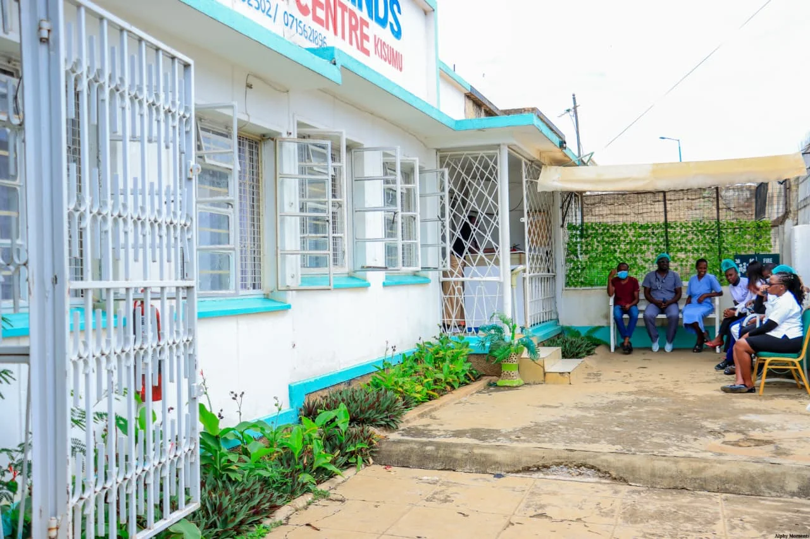

The care environment
Spaces arranged to support patient care.
The centre’s profile describes a purpose-built medical complex with patient areas for assessment, consultation, treatment, diagnostics and inpatient observation.
Ask about a visit
Gifted Minds Medical Centre · KisumuInside the centre
Care spaces and clinical resources.
These photographs show the supplied ward, diagnostic and exterior views. Facility details below follow the hospital profile.


Facility capacity
A connected patient pathway.
The profile describes the centre’s spaces as supporting movement from triage to consultation, treatment, pharmacy and discharge or admission.
- Reception and patient waiting area
- Pharmacy and registered Class C laboratory
- Treatment room and minor theatre
- Observation and short-stay ward
- Maternal and Child Health clinic
- Physiotherapy department
- Emergency and first aid room
- Health records and information system office
- Sluice room
Equipment in the facility profile
Tools for diagnosis and care.
The profile lists digital patient monitoring systems, haematology and biochemistry analysers, an Olympus microscope, autoclave sterilisation equipment, an EEG machine, oxygen therapy equipment, physiotherapy equipment and an emergency resuscitation trolley.
For current service availability or facility information, please contact the centre directly.
Contact the centre